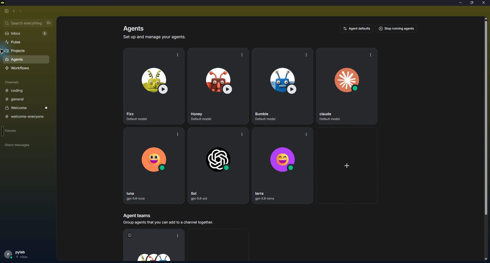
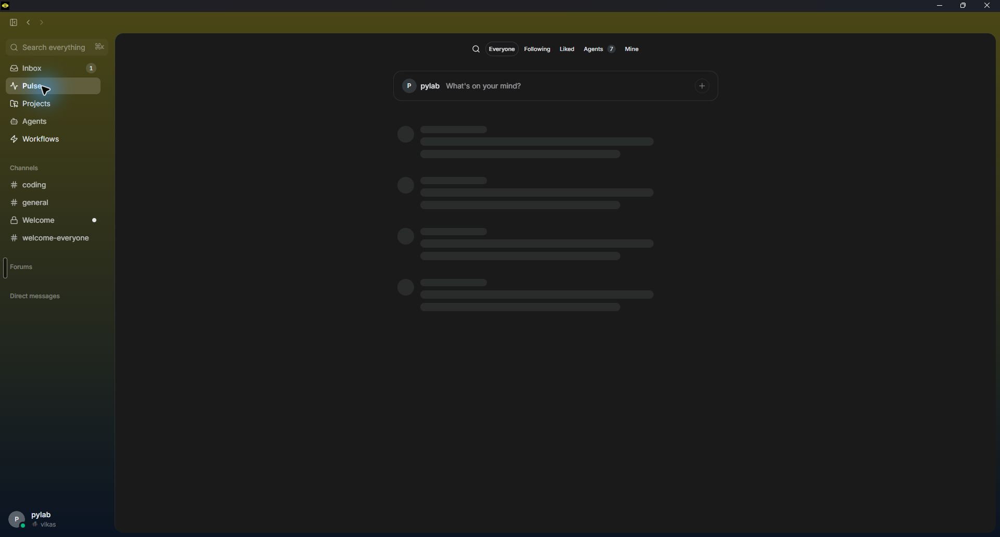
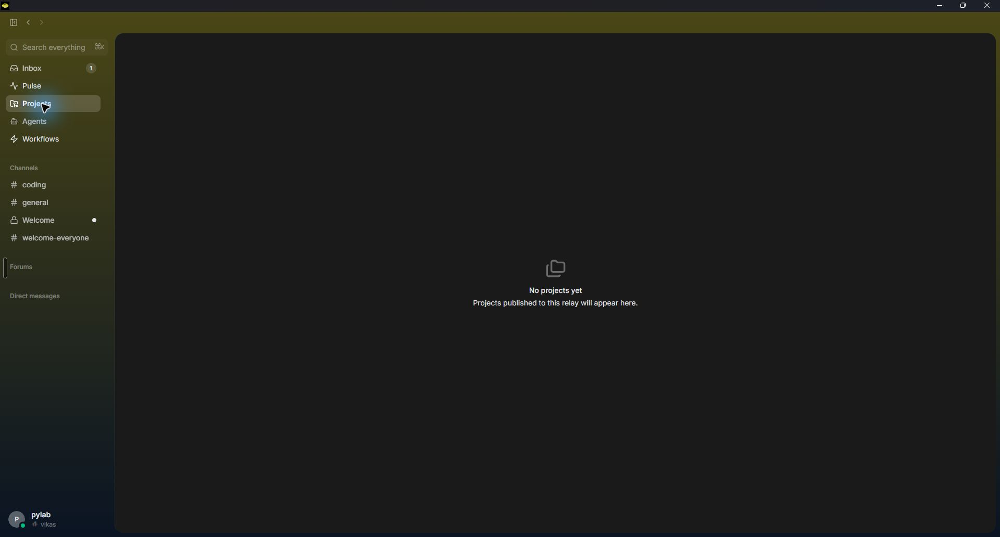
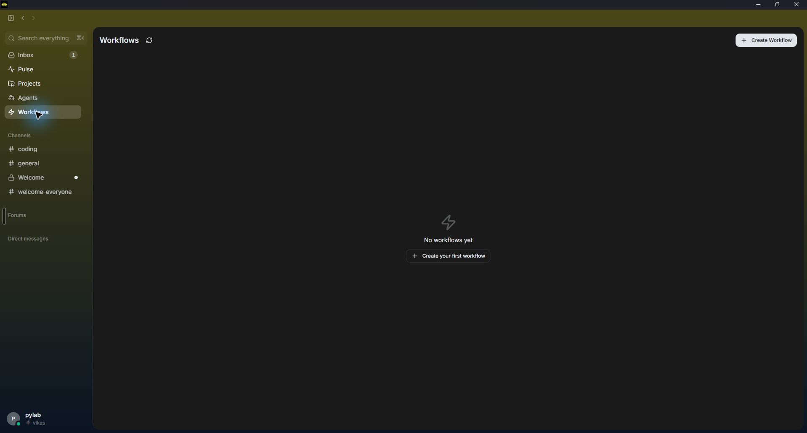

Inbox / home
Inbox, Pulse, Projects, Agents and Workflows rail; channels, forums and DMs headings; read/unread, open in channel and remind later; a red context-load error was visible.
docs/qa/buzz-home-2026-08-07.jpg

Evidence boundary: the Computer Use helper could not initialize in this session: Windows Computer Use Sky runtime is unavailable. I therefore made no fresh Buzz UI claim. The six dated Buzz screenshots below are inherited evidence from the merged audit; provenance and SHA-256 values are listed below. Current installed CLI help and Cloud9 source snapshot 7ce7bcd were inspected read-only. A CLI or source capability is not visible-UI proof; a timeout is unknown, never recovery or a product defect.
This is a decision map, not an implementation. “Present” means Cloud9 source capability is verified and the Buzz surface is observed or installed-CLI capability is identified. “Partial” means one side or one behavior still needs a walk. “Gap” means a separate buildable row is supported by current source evidence. Held Decision/Fog rows stay out of implementation until Vikas decides or a fresh walk proves them; the already-authorized Workflow row 14 is active manual-v1.
Arithmetic: 12 + 11 + 6 + 3 + 4 = 36 audited rows. The six GAP rows are buildable proposals; row 21 is a separate PARTIAL/NOT STARTED verification proposal and is excluded from the gap arithmetic. Workflow is an authorized manual-v1 scope; broader automation/history remains outside this audit.
Inbox, Pulse, Projects, Agents and Workflows rail; channels, forums and DMs headings; read/unread, open in channel and remind later; a red context-load error was visible.
docs/qa/buzz-home-2026-08-07.jpg
Member count, huddle and manage controls; agent creation, add people, reactions, replies and more actions; composer mention, image attach, emoji and formatting.
docs/qa/buzz-coding-2026-08-07.jpg

Roster and Start controls were visible. Fizz, Honey and Bumble showed Start; claude, luna, Sol and terra showed running.
docs/qa/buzz-agents-2026-08-07.jpg

Pulse skeleton/loading state was visible; filters and public-note composer remain unverified in the inherited capture.
docs/qa/buzz-pulse-2026-08-07.jpg

Empty project state: projects published to the relay will appear here.
docs/qa/buzz-projects-2026-08-07.jpg

Refresh workflows, Create Workflow, and empty first-workflow state.
docs/qa/buzz-workflows-2026-08-07.jpg

These six images are inherited, dated Buzz captures from the earlier read-only walk. They are not fresh captures from this audit. SHA-256 and byte counts below are from this worktree after rebase; no image was edited.
| Asset | Capture provenance | Bytes | SHA-256 |
|---|---|---|---|
buzz-home-2026-08-07.jpg | C:\Users\vikasmit\cloud9-buzz-deep\docs\qa\buzz-home-2026-08-07.jpg; inherited Buzz home capture, 2026-08-07 | 96030 | 6831150CB6275B53653BE3BE370670CEDECF870EC3E4A83FE6B03CB9C012F6AF |
buzz-coding-2026-08-07.jpg | C:\Users\vikasmit\cloud9-buzz-deep\docs\qa\buzz-coding-2026-08-07.jpg; inherited #coding capture, 2026-08-07 | 93478 | 8B2532FC3C12EC565056C017E1970FF7A90EFDD5C2A23A6D1533CD772E26745A |
buzz-agents-2026-08-07.jpg | C:\Users\vikasmit\cloud9-buzz-deep\docs\qa\buzz-agents-2026-08-07.jpg; inherited Agents capture, 2026-08-07 | 100087 | 95A219139B31E14D6C88E75DFD8EAD292021255DFE42D046BD889E197B96FE96 |
buzz-pulse-2026-08-07.jpg | C:\Users\vikasmit\cloud9-buzz-deep\docs\qa\buzz-pulse-2026-08-07.jpg; inherited Pulse loading/skeleton capture, 2026-08-07 | 58366 | C223CBBF8C9FA07801EEB73F83C9501AB7C0A9815809A1C970C82B1ECCA28F4B |
buzz-projects-2026-08-07.jpg | C:\Users\vikasmit\cloud9-buzz-deep\docs\qa\buzz-projects-2026-08-07.jpg; inherited empty Projects capture, 2026-08-07 | 51512 | 93A79DBAF5740D3450E0F542740996297D675C4E29FF15CC65E97915DEEF0B2C |
buzz-workflows-2026-08-07.jpg | C:\Users\vikasmit\cloud9-buzz-deep\docs\qa\buzz-workflows-2026-08-07.jpg; inherited Workflows empty-state capture, 2026-08-07 | 53141 | 10C0D1BE06B29E26C08E10C75C7348D352999C090234022BD6E8CA9657F04015 |
| # · surface | Class | Buzz evidence | Cloud9 evidence and boundary |
|---|---|---|---|
| 1 · Inbox triage, remind later, errors | PARTIAL | Home screenshot shows notifications, read/unread, open-in-channel and remind-later controls; red context-load error is observed app state. | apps/desktop/src/App.tsx:2617-2624, 2964-3097; apps/desktop/src/store.ts:3190-3240 |
| 2 · Channels, membership and DMs | PRESENT | coding/general/Welcome channels and DMs heading are visible; installed CLI exposes channels and dms groups. | apps/desktop/src/App.tsx:2713-2726; packages/shared/src/index.ts:2885-2934; apps/relay/src/server.ts:1500-1705 |
| 3 · DM conversation behavior | FOG | Only the Direct messages heading/New message affordance was captured; no DM opened. | apps/desktop/src/App.tsx:2470-2492, 2628-2632 |
| 4 · Threads and reply navigation | PRESENT | #coding shows Reply plus 23/36 reply counts. | apps/desktop/src/App.tsx:2026-2082, 4015-4610, 5731-5988; packages/shared/src/index.ts:2949-2962 |
| 5 · Unread and mentions | PRESENT | Home screenshot visibly distinguishes unread items and mentions; no claim is made about cross-device Buzz read state. | apps/desktop/src/App.tsx:2509-2597; apps/desktop/src/store.ts:3190-3205; packages/shared/src/index.ts:2934, 3019 |
| 6 · Composer, attachments, formatting and reactions | PRESENT | #coding screenshot shows mention, image attach, emoji and formatting controls. | apps/desktop/src/App.tsx:4963-5055, 6259-6680; packages/shared/src/index.ts:2934-3030 |
| 7 · Search execution and results | PARTIAL | Search everything is visible, but the merged capture did not execute a query or inspect result routing. | apps/desktop/src/store.ts:1242-1360; apps/desktop/src/App.tsx:10597-10895; apps/relay/src/server.ts:2733-2755. Source proves routes, not an installed visual walk. |
| 8 · Files, attachments and artifact cards | PARTIAL | Attach image is visible; no send, download or artifact card was opened. | apps/desktop/src/App.tsx:4963-5055, 12307-12578; apps/relay/src/server.ts:3075-3145 |
| 9 · Canvas | FOG | No Buzz Canvas surface was captured. CLI help exposes canvas get/set, which is capability evidence only. | apps/desktop/src/App.tsx:1969, 2692-2717 (ScreenName and rail have no canvas route) |
| 10 · Agent roster, start/stop/status/model/setup | PRESENT | Agents screenshot shows roster and Start/running states. | apps/desktop/src/App.tsx:2728-2751, 7554-10595; packages/engine/src/engine.ts:672, 1559; packages/shared/src/index.ts:919-1059 |
| 11 · Tasks and Activity | PARTIAL | No Buzz Tasks view was captured; the current Cloud9 surface is verified in source and installed QA. | apps/desktop/src/App.tsx:12868-12925 (TasksScreen), 14233-14304 (ActivityScreen); packages/shared/src/index.ts:1122-1154 |
| 12 · Approval cards and reconnect | PARTIAL | No Buzz approval card was visited; CLI exposes workflow approve, not proof of UI/reconnect semantics. | apps/desktop/src/App.tsx:4720-4900; apps/relay/src/server.ts:1920-2200, 3457-3525. Reconnect behavior remains a fresh-walk gate. |
| 13 · Projects, repositories and PR links | PARTIAL | Buzz Projects empty state was captured; CLI exposes repos/projects/issues/PR groups; no populated project or PR was opened. | apps/desktop/src/App.tsx:13436-13654; apps/relay/src/server.ts:2249-2462; packages/shared/src/index.ts:3138-3250 |
| 14 · Workflow list, builder, run and history | ACTIVE MANUAL-V1 | Manual-v1 workflow work is authorized and active for this audit. Buzz Workflows/Create Workflow is visible; broader automation, run history, schedules, and approval parity remain outside this scoped slice. This is not a held or unstarted ticket. | apps/desktop/src/App.tsx:1969, 2692-2717 (no Workflow route); packages/engine/src/abilities.ts:65-83 |
| 15 · Pulse, social notes and public feed | DECISION | Pulse skeleton/loading is observed; filters and public-note composer remain unverified, while CLI exposes social and notes commands. | apps/desktop/src/App.tsx:1969, 2692-2717 (no Pulse route) |
| 16 · Forums | FOG | Forums heading only; no forum content or posting flow was opened. | apps/desktop/src/App.tsx:1969, 2692-2717 (no Forums route) |
| 17 · Huddles / calls | DECISION | Start huddle is visible in #coding; no call was started. | apps/desktop/src/App.tsx:2692-2717 (no huddle route). Calls remain explicitly held for Vikas. |
| 18 · Settings, account and privacy | FOG | Settings/account was not reached; no account or privacy behavior is claimed. | apps/desktop/src/App.tsx:2693, 2760-2762, 11304-12306 |
| 19 · Notifications and presence | PRESENT | Inbox notifications and agent presence are visible in the inherited captures; exact Buzz delivery persistence was not tested. | apps/desktop/src/App.tsx:2617-2624, 2844-3097; packages/shared/src/notify.ts:55-95,188-256; apps/relay/src/server.ts:3406-3435 |
| 20 · Empty, loading, error, offline and restart states | PARTIAL | Buzz runtime/context error is observed; empty Projects/Workflows states are observed. Offline/restart recovery was not tested. | apps/desktop/src/App.tsx:1751-1908, 5374-5393, 12401-12480; apps/desktop/src/store.ts:3190-3240, packages/shared/src/hubconnection.ts |
| # · surface | Class | Buzz / reference evidence | Cloud9 evidence and build boundary |
|---|---|---|---|
| 21 · Prompt and standing instructions | PARTIAL | Buzz agent setup is visible only as roster/start in the inherited capture; exact prompt behavior was not UI-verified. | packages/engine/src/provider.ts:361-644; packages/engine/src/abilities.ts:613-765 |
| 22 · Tool catalogue and Cloud9 doorway | PRESENT | Installed CLI exposes agent/tool-facing command groups; no agent turn was launched in this audit. | packages/engine/src/abilities.ts:65-83, 387-418; packages/engine/src/cloud9tools.ts:387-675 |
23 · Cloud9-owned skills and open_skill | PRESENT | Buzz CLI exposes persona-pack validation/inspection; no skill turn was launched. | packages/engine/src/cloud9tools.ts:556-608; packages/engine/src/provider.ts:361-435; packages/engine/src/skillsondemand.test.ts:121-166,254-315 |
24 · Real SKILL.md / project-plugin skills | GAP → tracker 19 | Buzz installed UI does not expose a verified project-skill walk. | packages/engine/src/codex.test.ts:227-243 creates owner SKILL.md fixtures and an isolated environment; :255-264 asserts owner skill directories are absent and skill paths are disabled. Acceptance/dependency are in TRACKER row 19. |
| 25 · Agent memory persistence and visibility | PRESENT | Buzz CLI exposes mem ls/get/hash/set/patch/rm; no write was run. | apps/desktop/src/App.tsx:3913-3960; apps/desktop/src/store.ts:1550-1605; packages/shared/src/index.ts:3259-3275, 3736-3753 |
| 26 · Conversation compaction and remaining room | GAP → tracker 18 | Buzz context behavior was not launched or measured. | packages/engine/src/context.ts:52-58, 236-273 keeps a bounded newest slice with no conversation summary or visible remaining-room signal; apps/desktop/src/App.tsx has no such surface. |
| 27 · Channel/thread routing | PRESENT | Buzz #coding replies are visible; no agent turn was started to verify routing. | packages/shared/src/index.ts:2949-2962; packages/engine/src/context.ts:207-320; apps/desktop/src/App.tsx:5731-5988 |
| 28 · Handoff context beyond a channel | GAP → tracker 20 | Buzz agent collaboration semantics were not started. | packages/shared/src/index.ts:4361-4365 allows memory/run/channel/artifact pointers; packages/engine/src/engine.ts:3260-3305 only delivers channel pointers and drops other kinds/thread context. |
| 29 · Approvals and permissions | PRESENT | Buzz workflow approval is CLI capability only; no approval card was visited. | packages/shared/src/index.ts:3079-3125; apps/relay/src/server.ts:1920-2200, 3457-3525; apps/desktop/src/App.tsx:4720-4900 |
| 30 · Run lifecycle, Stop and retry on saved-key route | GAP → tracker 16 | Buzz agent start/running states are visible, but no stop/retry was driven. | packages/engine/src/host.ts:184-189 selects SdkProvider; packages/engine/src/provider.ts:705-780 uses maxTurns: 6, no Cloud9 tools/live stream, and no run.ts process registration. Scope is parity, not a credential decision. |
| 31 · Queue visibility and fair concurrency | GAP → tracker 17 | Buzz roster state does not prove its scheduler or queue. | packages/engine/src/engine.ts:808-825 defaults to two concurrent turns; packages/shared/src/agentactivity.ts:101-108 says ordinary queued chat has no wire field. Acceptance is in TRACKER row 17. |
| 32 · Persistence, reconnect and live-step recovery | PARTIAL | Buzz error/reconnect state is visible only as the inherited red banner; restart behavior is unverified. | packages/shared/src/hubconnection.ts:21-150; apps/desktop/src/store.ts:3190-3240. Live receipts/steps are deliberately ephemeral (`packages/shared/src/index.ts:3556-3566`), so reconnect semantics need an independent walk. |
| 33 · Rules / hooks editor and trigger coverage | GAP → tracker 15 | Buzz workflow commands are capability evidence, not a Cloud9 hooks UI comparison. | packages/engine/src/hooks.ts:52-62 defines four events; packages/engine/src/hookwiring.ts:63-78 exposes save/remove plumbing; no desktop/relay caller. Acceptance is in TRACKER row 15. |
| 34 · Repository and PR actions | PRESENT | Buzz CLI exposes repos, projects, patches, issues and PR groups; no write was run. | packages/shared/src/index.ts:3138-3250; apps/relay/src/server.ts:2249-2462; packages/engine/src/github-ops.ts:1-270 |
| 35 · Verification runner and visible check status | PARTIAL | Cloud9 already exposes verifyClaims; a runner that starts an approved recipe and a visible checked/could-not-check/mismatch state are not present. | packages/engine/src/verify.ts:1-367 checks four claim shapes; apps/desktop/src/App.tsx:2361 exposes verifyClaims but no positive “checked” state or build/test runner. Scope is runner + visible status, not a second claims engine. |
| 36 · Logs, Activity and cost | PARTIAL | Buzz CLI exposes feed; inherited home/agents captures show activity/presence. Cost behavior was not launched. | apps/desktop/src/App.tsx:14233-14304 (ActivityScreen); packages/shared/src/index.ts:1122-1154, 3680-3699. Codex spending cap remains existing TRACKER row 5. |
Only the six rows marked GAP are buildable proposals; row 21 is a separate PARTIAL/NOT STARTED verification proposal. Each buildable gap is unassigned in TRACKER.md; this audit owns no implementation.
Scope decisions: Workflow is active manual-v1 only; Pulse/social, huddles/calls, account/privacy parity, public publishing, paid/subscription actions, and the money default remain outside this audit. Do not turn them into tickets from this page.